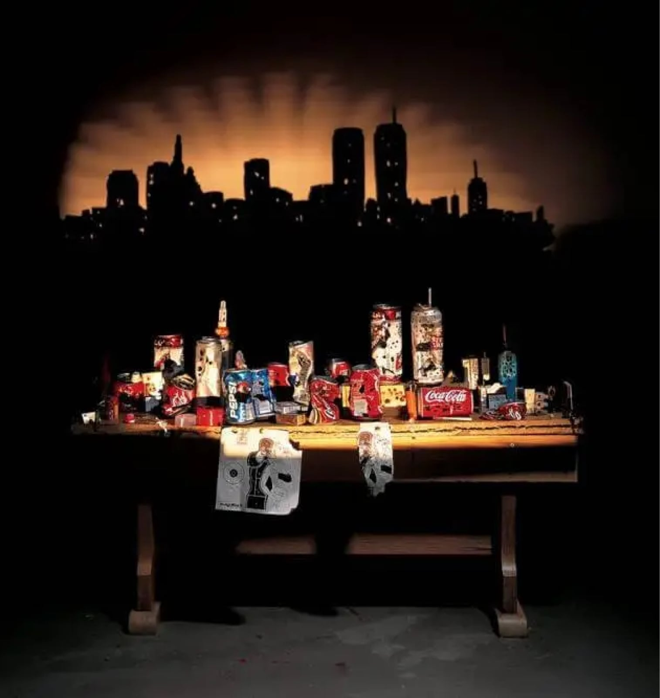
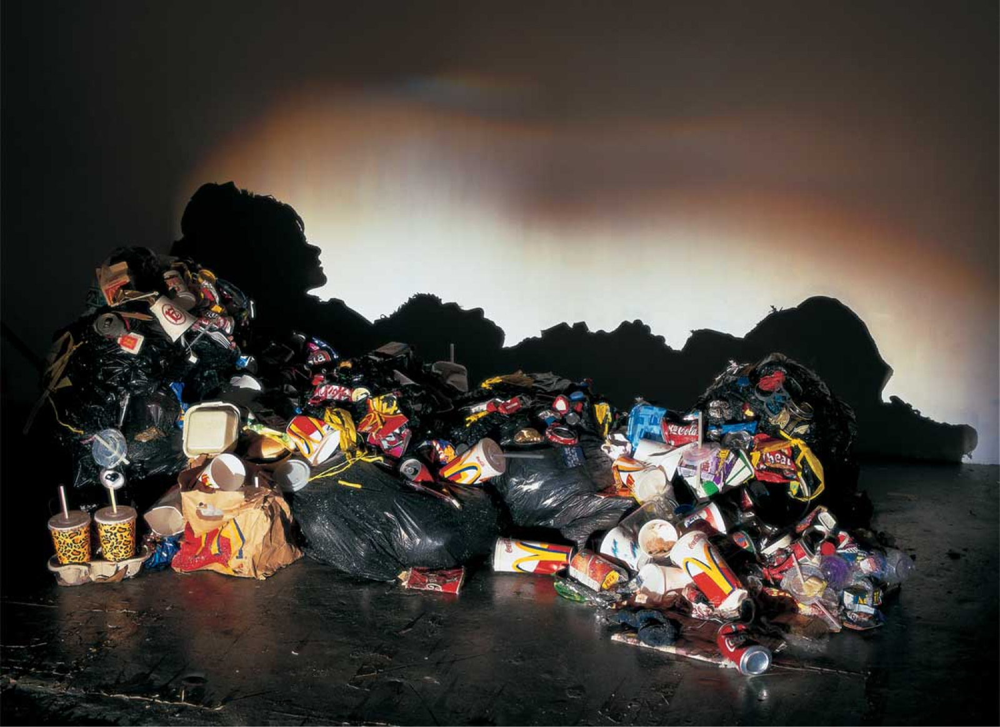
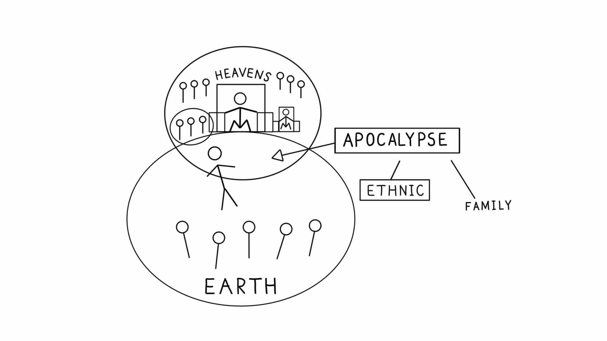

Sessão 24: A Imaginação ApocalípticaSession 24: The Apocalyptic Imagination
Principais Lições
- Efésios 4-6 trata de imaginar a nova criação no cenário concreto de nossas vidas.Ephesians 4-6 is about imagining the new creation in the concrete setting of our lives.
A Série Shadow de Tim Noble e Sue Webster
A obra de Tim Noble e Sue Webster oferece aos espectadores um tipo de apocalipse — a luz brilhando sobre sua arte projeta uma nova perspectiva e abre uma realidade diferente. Suas peças "Sunset Over Manhattan" (Noble, Tim; Webster, Sue, 2003, Fazzino.com) e "Wasted Youth" (Noble, Tim e Webster, Sue, 2000, TimNobleandSueWebster.com) usam lixo e detritos que, sob luz específica, revelam formas surpreendentes. Paulo passa por sua própria apocalipse e deseja o mesmo a outros seguidores de Jesus. Em Efésios 4-6, ele os encoraja a responder a essa apocalipse com os olhos abertos para uma realidade alternativa e imaginações despertadas para viver de modo diferente. Em 1-3, Jesus é o Messias sofredor e exaltado; agora a nova humanidade compartilha de sua morte, ressurreição e governo, abrindo um novo modo de viver e de amar.Tim Noble and Sue Webster's work provides viewers a type of apocalypse — light on their art casts a new perspective and opens a different reality. Their pieces "Sunset Over Manhattan" (Noble, Tim; Webster, Sue, 2003, Fazzino.com) and "Wasted Youth" (Noble, Tim and Webster, Sue, 2000, TimNobleandSueWebster.com) use trash and debris that, under specific light, reveal surprising forms. Paul goes through his own apocalypse and desires the same for others. In Ephesians 4-6, he encourages readers to respond with eyes opened to an alternate reality and imaginations sparked to live differently. In 1-3 Jesus is the suffering and exalted Messiah; now the new humanity shares in his death, resurrection, and rule, opening a new way of life.



Pergunta de Reflexão
Qual é um modo concreto em que você pode viver como se a nova criação fosse realmente verdade em sua vida?What is one concrete way you can live as if the new creation is actually true in your life?